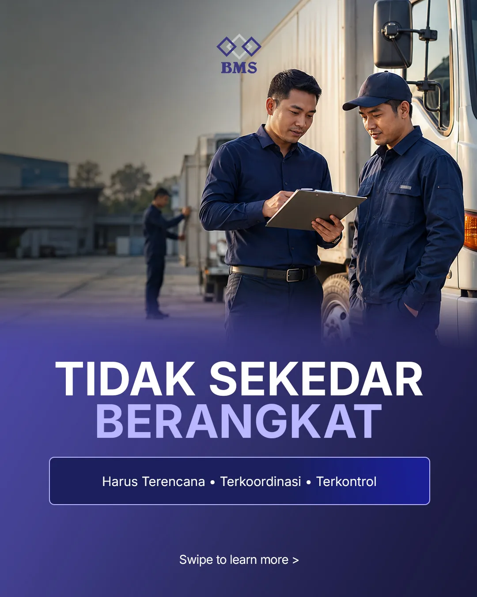
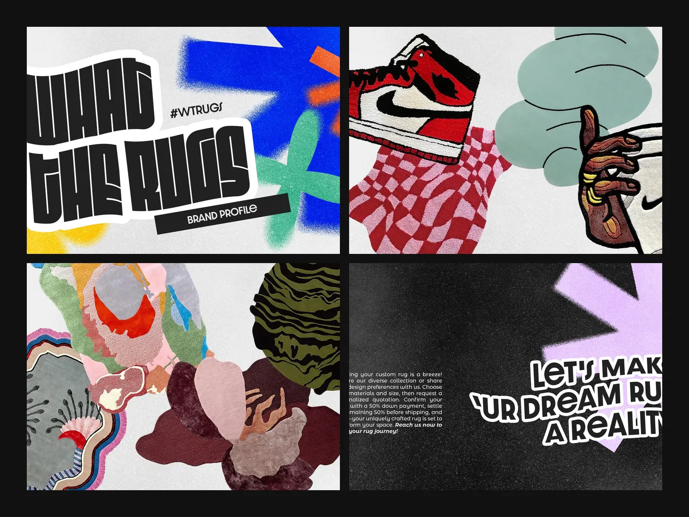

01Consumer brand
Opera Mineral Water
Hydration, unmistakably Opera. A flexible content system for product, lifestyle, and promotional communication.
View case study Brand communication · 2026

Visual design studio · Surabaya
ORA creates brand systems, campaigns, and content that make businesses easier to recognize—and easier to remember.

About ORA
From campaign to packaging, ORA builds visual languages that stay clear, distinctive, and ready to grow.
Selected case studies
Four projects showing how ORA adapts its approach across consumer, B2B, product, and expressive brand work.
Hydration, unmistakably Opera. A flexible content system for product, lifestyle, and promotional communication.
Logistics, made clear. A structured visual system that turns operational complexity into credible business communication.

Premium, from the first glance. One refined identity across packaging, photography, and digital content.

Bold, by design. An expressive identity built to feel as distinctive as the custom rugs themselves.

Capabilities
A focused mix of direction, design, and execution—built to work together.
Identity, direction, and visual rules that create recognition.
02Concepts, carousels, stories, and digital assets with one clear rhythm.
03Profiles, presentations, print, and packaging designed as one system.
04Images created to strengthen the wider brand—not simply fill a layout.
More selected work
A broader look at ORA’s work across lifestyle, events, fashion, wellness, and service brands.
Start a project
Brand identity, campaigns, social content, editorial design, packaging, and photography.